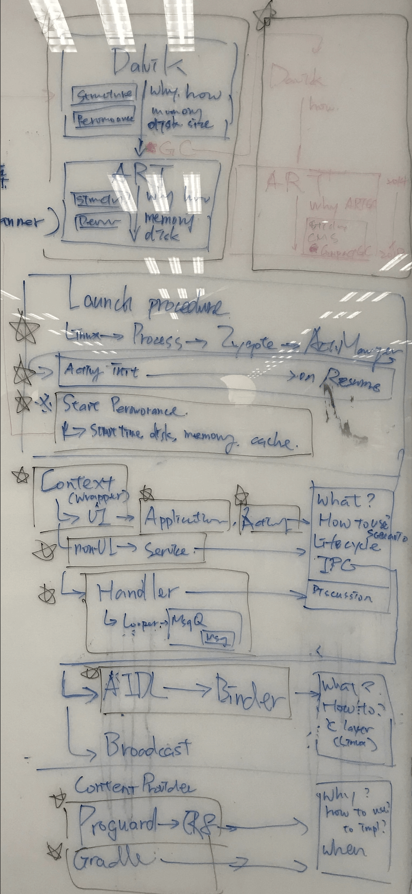

<!DOCTYPE html>
<html lang="zh-tw">
<head prefix="og: http://ogp.me/ns#">
  <meta charset="utf-8">
  <title>Year End Report - Preface | Ansgar</title>
  <meta http-equiv="X-UA-Compatible" content="IE=Edge,chrome=1">
  <meta name="viewport" content="width=device-width, initial-scale=1">
  <!-- Canonical links -->
  <link rel="canonical" href="https://ansgarlin.github.io/zh-tw/news/2018/12/09/year_end_report_0_preface/index.html">
  <!-- Alternative links -->
  
  <!-- Icon -->
  <link rel="apple-touch-icon" sizes="57x57" href="/icon/apple-touch-icon-57x57.png">
  <link rel="apple-touch-icon" sizes="114x114" href="/icon/apple-touch-icon-114x114.png">
  <link rel="apple-touch-icon" sizes="72x72" href="/icon/apple-touch-icon-72x72.png">
  <link rel="apple-touch-icon" sizes="144x144" href="/icon/apple-touch-icon-144x144.png">
  <link rel="apple-touch-icon" sizes="60x60" href="/icon/apple-touch-icon-60x60.png">
  <link rel="apple-touch-icon" sizes="120x120" href="/icon/apple-touch-icon-120x120.png">
  <link rel="apple-touch-icon" sizes="76x76" href="/icon/apple-touch-icon-76x76.png">
  <link rel="apple-touch-icon" sizes="152x152" href="/icon/apple-touch-icon-152x152.png">
  <link rel="icon" type="image/png" href="/icon/favicon-196x196.png" sizes="196x196">
  <link rel="icon" type="image/png" href="/icon/favicon-160x160.png" sizes="160x160">
  <link rel="icon" type="image/png" href="/icon/favicon-96x96.png" sizes="96x96">
  <link rel="icon" type="image/png" href="/icon/favicon-16x16.png" sizes="16x16">
  <link rel="icon" type="image/png" href="/icon/favicon-32x32.png" sizes="32x32">
  <meta name="msapplication-TileColor" content="#2f83cd">
  <meta name="msapplication-TileImage" content="/icon/mstile-144x144.png">
  <meta name="generator" content="Hexo 5.2.0">
  <!-- CSS -->
  <!-- build:css build/css/navy.css -->
  
<link rel="stylesheet" href="/css/navy.css">

  <!-- endbuild -->
  <link href="https://fonts.googleapis.com/css?family=Lato:300,400,700" rel="stylesheet" type="text/css">
  <link rel="stylesheet" href="https://maxcdn.bootstrapcdn.com/font-awesome/4.3.0/css/font-awesome.min.css">
  <link rel="stylesheet" href="https://cdn.jsdelivr.net/docsearch.js/1/docsearch.min.css">
  <!-- RSS -->
  <link rel="alternate" href="/atom.xml" title="Ansgar" type="application/atom+xml">
  <!-- Open Graph -->
  <meta name="description" content="去年12月中，我開始一個中長期計畫：每週寫一篇文章，題目沒有限制，單純是將曾經花時間研究的題目做個紀錄。執行後才發現，針對一個議題撰寫一篇文章，尤其是與實作原理有關的，會是非常耗時的事情。由於只能在下班以後動工，一篇文章總是要過一兩週才可以生成。 截至目前為止，總共完成35篇文章（扣掉篇幅太短不應是完整的文章），以一年52週來看，也有完成了67%，自認勉強到達及格邊緣。 另外，因為碰巧看了ProG">
<meta property="og:type" content="article">
<meta property="og:title" content="Year End Report - Preface">
<meta property="og:url" content="https://ansgarlin.github.io/zh-tw/news/2018/12/09/year_end_report_0_preface/index.html">
<meta property="og:site_name" content="Ansgar">
<meta property="og:description" content="去年12月中，我開始一個中長期計畫：每週寫一篇文章，題目沒有限制，單純是將曾經花時間研究的題目做個紀錄。執行後才發現，針對一個議題撰寫一篇文章，尤其是與實作原理有關的，會是非常耗時的事情。由於只能在下班以後動工，一篇文章總是要過一兩週才可以生成。 截至目前為止，總共完成35篇文章（扣掉篇幅太短不應是完整的文章），以一年52週來看，也有完成了67%，自認勉強到達及格邊緣。 另外，因為碰巧看了ProG">
<meta property="og:locale" content="zh_TW">
<meta property="og:image" content="https://ansgarlin.github.io/zh-tw/news/2018/12/09/year_end_report_0_preface/out_line.png">
<meta property="article:published_time" content="2018-12-09T00:00:00.000Z">
<meta property="article:modified_time" content="2020-11-07T10:14:05.202Z">
<meta property="article:author" content="Ansgar Lin">
<meta name="twitter:card" content="summary">
<meta name="twitter:image" content="https://ansgarlin.github.io/zh-tw/news/2018/12/09/year_end_report_0_preface/out_line.png">
  <!-- Google Analytics -->
  
  <script async src="//pagead2.googlesyndication.com/pagead/js/adsbygoogle.js"></script>
  <script>
     (adsbygoogle = window.adsbygoogle || []).push({
          google_ad_client: "ca-pub-6482217598104186",
          enable_page_level_ads: true
     });
  </script>
</head>

<body>
  <div id="container">
    <header id="header" class="wrapper">
  <div id="header-inner" class="inner">
    <a href="/zh-tw/" class="main-nav-link"><i class="fa fa-home"></i></a>
    <nav id="main-nav">
      <a href="/zh-tw/android/" class="main-nav-link">Android</a><a href="/zh-tw/kotlin/" class="main-nav-link">Kotlin</a><a href="/zh-tw/rxjava/" class="main-nav-link">RxJava</a>
      <a target="_blank" rel="noopener external nofollow noreferrer" href="https://github.com/AnsgarLin" class="main-nav-link"><i class="fa fa-github-alt"></i></a>
    </nav>
    <div id="lang-select-wrap">
      <label id="lang-select-label"><i class="fa fa-globe"></i><span>正體中文</span></label>
      <select id="lang-select" data-canonical="">
        
          <option value="en">English</option>
        
          <option value="zh-tw" selected>正體中文</option>
        
      </select>
    </div>
    <a id="mobile-nav-toggle">
      <span class="mobile-nav-toggle-bar"></span>
      <span class="mobile-nav-toggle-bar"></span>
      <span class="mobile-nav-toggle-bar"></span>
    </a>
  </div>
</header>

    <div id="content-wrap">
  <div class="wrapper">
    <div class="inner">
      <article class="article post" itemscope itemtype="http://schema.org/Article">
  <header class="article-header">
    
      <h1 class="article-title" itemprop="name">Year End Report - Preface</h1>
    
    <a href="/zh-tw/news/2018/12/09/year_end_report_0_preface/" class="article-date"><time datetime="2018-12-09T00:00:00.000Z">2018-12-09</time></a>
  </header>
  <div class="article-content" itemprop="articleBody">
    <p>去年12月中，我開始一個中長期計畫：<strong>每週寫一篇文章</strong>，題目沒有限制，單純是將曾經花時間研究的題目做個紀錄。執行後才發現，針對一個議題撰寫一篇文章，尤其是與實作原理有關的，會是非常耗時的事情。由於只能在下班以後動工，一篇文章總是要過一兩週才可以生成。</p>
<p>截至目前為止，總共完成35篇文章（扣掉篇幅太短不應是完整的文章），以一年52週來看，也有完成了67%，自認勉強到達及格邊緣。</p>
<p>另外，因為碰巧看了<a target="_blank" rel="noopener external nofollow noreferrer" href="https://www.guardsquare.com/en/products/proguard">ProGuard</a>這類較為特殊的題目，並實際運用在公司的專案內，讓我順利達成另一個目標：<strong>一場正式的分享</strong>。原本目標只是想在公司內做個內部分享，但有幸在主管的幫助下，趕上南台灣的<a href="mopcon.org/2018">MOPCON</a>，成為其中的一個session的<a href="mopcon.org/2018/speaker.php?id=28">講者</a>，有興趣歡迎看看<a target="_blank" rel="noopener external nofollow noreferrer" href="https://www.youtube.com/watch?v=W6s0O3gpahY&list=PL0ny0trU2gnBgBXeh3HCou7k3UAWB3huW">影片</a>。</p>
<p>這是一場很有趣的體驗，不論是題目挑選、預演、和中間準備的過程，無不感受到資深前輩們在台上一小時的演講，背後蘊含數月甚至數年的累積，才能將複雜的原理，簡述成一個概念。</p>
<blockquote>
<p> ProGuard也是我這年寫過最長的一個系列文，因為寫的過程中不斷遇到新的問題，也就有延伸的題目。整整耗了我兩個多月才完成。內容涵蓋所有我認為如要深入探究ProGuard的世界，必須要先理解的概念。</p>
</blockquote>
<p>一年下來，我並沒特別去確認我的進度，也沒特別的要完成這些目標。因為任何事情，尤其是有意義的事情，越需要時間打磨。我並沒有因為這些目標而失去生活，我將生活融入到這些目標中：<strong>目標即是生活</strong>。</p>
<p>我想我不需要感謝未婚妻給我時間完成這些目標，因為即使我心中有100件事要完成，我依然將她的事情擺在所有任務之前。因為我始終相信：</p>
<blockquote>
<p>事業只是一時，伴侶是一輩子。只有伴侶的扶持，事業才能走一輩子。</p>
</blockquote>
<p>因此，接下來要打開的一個序列文，我命名為<strong>《Year End Report》</strong>，來當成對我自己，同時也是對她的一個交代：<strong>這一年，我們有好好地走過</strong>。</p>
<p>當然對於讀者來說，這是一篇幾乎全新的內容，會這樣說是因為我想寫的內容，有些在之前已經涵蓋過了。但畢竟時空不同，所以會將舊的文章稍作修改，並直接引用。</p>
<h3 id="Content" class="article-heading"><a href="#Content" class="headerlink" title="Content"></a>Content<a class="article-anchor" href="#Content" aria-hidden="true"></a></h3><p>本次的內容，先讓我們來看一張圖：</p>
<p></p>
<p>這些涵蓋了不只是今年所研究過的問題，同時也是與團隊討論後，認為身為一個Android開發者，所需要理解的部分。不過Android發展已經10年，很多部分涵蓋的廣度已經不是單篇文章就可講完。因此我將退一步，僅講述每個部分的基礎概念，這也是我對此系列的定位，如有其他深入的題目，我會將其獨立成一篇文章。</p>
<p>簡化後我總共定下了9個題目，依照題目大小可能會不止一篇，像是系列文內的子系列。簡化後的內容將比起系列文更偏向於結論，雖然可能會因此無法理解其中原因，但可以抓到整體概念。</p>
<p>所以9個題目如下：</p>
<ul>
<li>ART - From Dalvik to ART</li>
<li>GC - Give me space!</li>
<li>Launch Process - That’s how everything start</li>
<li>Activity Init - Bring them to the world</li>
<li>Context - Application, Activity, and Service</li>
<li>IPC - Binder, AIDL, and Broadcast</li>
<li>Handler - Can you do that for me?</li>
<li>ProGuard - Hey, hands off!</li>
<li>Gradle - Just click “Start”</li>
</ul>

  </div>
  
<section id="comments">
  <div id="disqus_thread"></div>
</section>
<script>
  var disqus_shortname = 'ansgarlin';
  var disqus_url = 'https://ansgarlin.github.io/zh-tw/news/2018/12/09/year_end_report_0_preface/index.html';
  var disqus_title = "Year End Report - Preface";
  var disqus_config = function(){
    this.language = 'zh_TW';
  };
  (function(){
    var dsq = document.createElement('script'); dsq.type = 'text/javascript'; dsq.async = true;
    dsq.src = 'https://go.disqus.com/embed.js';
    (document.getElementsByTagName('head')[0] || document.getElementsByTagName('body')[0]).appendChild(dsq);
  })();
</script>

</article>

    </div>
  </div>
</div>
    <footer id="footer" class="wrapper">
  <div class="inner">
    <div id="footer-copyright">
      &copy; 2020 Ansgar Lin. Powered by <a href="https://hexo.io/" rel="external nofollow noreferrer" target="_blank">Hexo</a><br>
      Documentation licensed under <a href="http://creativecommons.org/licenses/by/4.0/" rel="external nofollow noreferrer" target="_blank">CC BY 4.0</a>.
    </div>
    <div id="footer-links">
      <a href="mailto:AnsgarLin@gmail.com" rel="external nofollow noreferrer" class="footer-link" target="_blank"><i class="fa fa-envelope"></i></a>
      <a href="https://www.linkedin.com/in/AnsgarLin" rel="external nofollow noreferrer" class="footer-link" target="_blank"><i class="fa fa-linkedin-square"></i></a>
      <a href="https://github.com/AnsgarLin" rel="external nofollow noreferrer" class="footer-link" target="_blank"><i class="fa fa-github-square"></i></a>
      <a href="https://AnsgarLin.gitbooks.io/" rel="external nofollow noreferrer" class="footer-link" target="_blank"><i class="fa fa-book"></i></a>
    </div>
  </div>
</footer>

  </div>
  <div id="mobile-nav-dimmer"></div>
  <nav id="mobile-nav">
  <div id="mobile-nav-inner">
    <ul id="mobile-nav-list">
      <a href="/zh-tw/android/" class="mobile-nav-link">Android</a><a href="/zh-tw/kotlin/" class="mobile-nav-link">Kotlin</a><a href="/zh-tw/rxjava/" class="mobile-nav-link">RxJava</a>
      <li class="mobile-nav-item">
        <a href="https://github.com/AnsgarLin" class="mobile-nav-link" rel="external" target="_blank">GitHub</a>
      </li>
    </ul>
    
  </div>
  <div id="mobile-lang-select-wrap">
    <span id="mobile-lang-select-label"><i class="fa fa-globe"></i><span>正體中文</span></span>
    <select id="mobile-lang-select" data-canonical="">
      
        <option value="en">English</option>
      
        <option value="zh-tw" selected>正體中文</option>
      
    </select>
  </div>
</nav>
  <!-- Scripts -->
<!-- Cookie -->
<script src="https://cdnjs.cloudflare.com/ajax/libs/js-cookie/2.2.0/js.cookie.min.js"></script>
<!-- build:js build/js/main.js -->

<script src="/js/lang_select.js"></script>
 
<script src="/js/toc.js"></script>
 
<script src="/js/mobile_nav.js"></script>

<!-- endbuild -->

<!-- Algolia -->

<script src="//cdn.jsdelivr.net/autocomplete.js/0/autocomplete.min.js"></script>
<script src="//cdn.jsdelivr.net/algoliasearch/3/algoliasearch.min.js"></script>
<script type="text/javascript">
    document.getElementById('search-input-wrap').classList.add('on');
    var client = algoliasearch('769KWCTEZG', 'e6a393ae2870a9ce5f88a275f04156a3');
    var index = client.initIndex('ansgar');
    autocomplete('#search-input', { 
        hint: false
    }, [
        {
          source: autocomplete.sources.hits(index, { hitsPerPage: 5 }),
          templates: {
            suggestion: function(suggestion) {
              return '<div class="algolia-docsearch-suggestion algolia-docsearch-suggestion__main algolia-docsearch-suggestion__secondary" style="white-space: normal;"><div class="algolia-docsearch-suggestion--category-header">' + 
                  suggestion._highlightResult.title.value + //<span class="algolia-docsearch-suggestion--highlight">R</span>outer
              '</div>' + 
              '<div class="algolia-docsearch-suggestion--wrapper"><div class="algolia-docsearch-suggestion--subcategory-column"><span class="algolia-docsearch-suggestion--subcategory-column-text">' +
                  suggestion._highlightResult.title.value +//<span class="algolia-docsearch-suggestion--highlight">R</span>outer</span
              '</div>' + 
              '<div class="algolia-docsearch-suggestion--content"><div class="algolia-docsearch-suggestion--subcategory-inline">' + 
                  suggestion._highlightResult.title.value +//<span class="algolia-docsearch-suggestion--highlight">R</span>outer
              '</div>' + 
              '<div class="algolia-docsearch-suggestion--title">' + 
                  suggestion._highlightResult.title.value +//<span class="algolia-docsearch-suggestion--highlight">R</span>outer
              '</div>' + 
              '<div class="algolia-docsearch-suggestion--text">' + 
                  suggestion._highlightResult.text.value +//<span class="algolia-docsearch-suggestion--highlight">R</span>outer
              '</div>' + 
//                  The <span class="algolia-docsearch-suggestion--highlight">r</span>outer saves all paths used in the site…</div>
              '</div></div></div>'
                
//              return '<a href="/material_design/">' + suggestion._highlightResult.name.value + '</a>';
//              return suggestion._highlightResult.name.value;
            }
          }
        }
      ]).on('autocomplete:selected', function(event, suggestion, dataset) {
        window.location = '/' + suggestion.path;
        return dataset.source;
//    console.log(suggestion, dataset);
    });
</script>

</body>
</html>